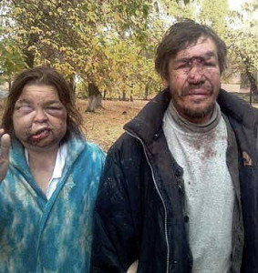
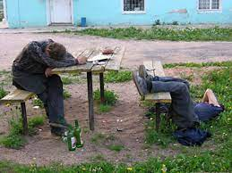

Вступ і пояснення чого все так паскудно виглядає
Цей сайт вам розповість про пивко в Україні! Він створений для того, що б ви не тільки пили, а щей щоб були
обізнані і розвивалися. Уявіть, що сидите в компанії своїх товаришів і так сталося, що нема про що
поговорити
і раптом ви видаєте таку річ шо пиво Янтар походить з Миколаєва і також варить пиво Чернігівске і Рогань на
своїхзаводах! І ваші такі "вааааауууу супер, дякую піду мамі розкажу"
А зараз автор трохи пояснить, чому на цей сайт страшно дивитись. Справа в тому, що розробник цього сайту ще
нічорта не вміє, його навчили тілько писати текст і пхати зображення. Цей необхідний сайт буде покращуватись
з кожним наступним уроком, я як замовник і дизайнер цього сайту прослідкую, щоб верстальщик довів цей сайт
до ладу і від його вигляду вам більше не хотілось пробити долонью своє лице.
Янтар
- Ви звісно мене запитаєте чому саме Янтар перший в цьому переліку, так як на то щоб розповідати першим про
пиво
заслуговують також і інші марки пивка. Відповідь в тому, що автор редактор цієї статті походить з
міста Герой Миколаїв,
яким він став після клятої кацапскої агресії від 24 лютого 2022 року.
-
Миколаївський пивзавод «Янтар» було збудовано 1973 року за чеським проектом та з використанням
найдосконаліших на той
час технологій.
В рамках процесу роздержавлення власності у 1994 році підприємство приватизоване зі створенням акціонерного
товариства,
яке залучило іноземні інвестиції, за рахунок яких було проведено реконструкцію виробничих потужностей.
Станом на 1999
рік найбільшим акціонером пивзаводу «Янтар» був кіпрський інвестиційний фонд INVESCO[2].
У 1999 році контрольний пакет акцій підприємства придбала зареєстрована у нідерландах компанія Interbrew
Holding B.V.,
яка після низки злиттів та поглинань увійшла до структури Anheuser-Busch InBev — найбільшого виробника пива
у світі[3].
Безпосередня реалізація прав володіння пивзаводом здійснюється через дочірнє підприємство «САН ІнБев
Україна», яке до
2006 року володіло контрольними пакетами акцій пивзаводу «Янтар» (71,63 % акцій), а також харківського
пивзаводу
«Рогань» (87,06 %) та чернігівського пивкомбінату «Десна» (74,48 %), коли ці три підприємства були окремими
юридичними
особами, зареєстрованими у формі акціонерних товариств. У 2006 році було проведено реорганізацію компанії
«САН Інтербрю
Україна» (тодішня назва «САН ІнБев Україна») у відкрите акціонерне товариство, на баланс якого були передані
активи
броварень, якими вона володіла, включаючи пивзавод «Янтар»[4]. На сьогодні броварня — безбалансова філія
ПрАТ «АБІНБЕВ
ЕФЕС УКРАЇНА».
Протягом 2005—2006 років на підприємстві проведено чергову реконструкцію. Інвестиційний проект на суму 29
мільйонів євро
дозволив майже вдвічі збільшити виробничу потужність пивзаводу.
Джерело
Відгуки поціновувачів!
Іван 56 років. «Так, пивко дуже класне і якісне, хоча і після четвертого літру втрачає свій смак і п’ється як вода»
Сергій 16 років. «Дуже міцне… виносить після першої пляшки»
Арсеній 45 років. «Ой ну не знаю, мені більше всього воно якось»
Данило 30 років. «Добре пиво»
Чернігівське
- Чернігівське пиво користується дуже високим попитом серед людей, які дивляться спорт, бо то є офіційний
спонсор багатьох
спортивних трансляцій, але не путати людей які дивляться спорт і спортом займаються. Будьте уважні, якщо ви
на вулиці
зустрінете спортсмена, то не питайте у нього одразу, де тут купити Чернігівське, це може погано для вас
закінчитись,
якщо спортсмен займається боксом.
-
Чернігівський пивкомбінат «Десна» було збудовано 1976 року з використанням чеських технологій.
Підприємство стало
основним виробничим підрозділом Чернігівського виробничого об'єднання пиво-безалкогольної промисловості
Держагропрому
СРСР, продукція якого продавалася на теренах Чернігівщини та поставлялася до сусідніх Київської,
Сумської, Брянської
областей[2].
З початком процесу роздержавлення власності підприємство було спочатку орендоване, а згодом й
приватизоване трудовим
колективом. Від почтаку 1990-х років пивкомбінат розпочав співпрацю з бельгійською пивоварною корпорацією
Interbrew, яка
шляхом викупу акцій, у тому числі під час додаткових емісій, поступово нарощувала свою частку власності у
підприємстві.
Вже 1996 року дочірня по відношенню до Interbrew нідерландська компанія Interbrew Holding B.V.
сконцентрувала
контрольний пакет акцій броварні.
2006 року було проведено реорганізацію компанії САН Інтербрю Україна (тодішня назва САН ІнБев Україна) у
відкрите
акціонерне товариство, на баланс якого були передані активи броварень, якими вона володіла (броварня
«Десна», а також
броварні «Рогань» та «Янтар»)[3]. У 2018 році було проведено злиття бізнесів бельгійської AB InBev та
турецької Anadolu
Efes на території України та Росії. На сьогодні броварня — безбалансова філія ПРАТ «АБІНБЕВ ЕФЕС
УКРАЇНА».
Джерело
Відгуки поціновувачів!
Степан 22 роки. «Супер, ми з пацанами після універу постійно берем, а якщо є акція то навіть і замість універу»
Тарас 28 років. «та ну таке трохи гірке, але з горішками то може бути»
Ігор 37 років. «Ми з дружиною дивимось бобслей, то завжди берем щоб хоч якось на це можна було дивитись »
Оболонь
- Оболонь. Це дуже солідне в минулому пивко! Про нього є що розповісти, але чи це варто та актуально на
теперішній час. В
минулому Оболонь, так як і Чернігівське був активним спонсором різних спортивних змагань. Якось так
повелось, що
несумісні речі, такі як алкоголь і спорт тісно пов’язані. Зараз пиво не дуже актуально, не зрозуміло з чим
це пов’язано.
Є припущення, що це через слабу рекламу і втрачені властивості пива. Зараз Оболонь переживає не найкращі
часи. Але варто сказати про те, що це один з найбільших концернів України і продукував свій товар на весь
світ. Оболонь є гігантом в таких продукціях як квас, слабоалкогольні напої, води і то що, але тут не про це.
-
Історія компанії веде свій початок із 1974 року, коли розпочалося будівництво Київського пивзаводу № 3.
Місцем для
будівництва нового заводу було обрано київський район Оболонь. Цей вибір визначався наявністю великих
запасів мʼякої та
чистої води.[5] Станом на 2010 рік головне підприємство використовує воду принаймні з 13 артезіанських
свердловин, перші
4 з яких були відкриті у 1977, ще 3 — у 1978, 1 — у 1979, 2 — у 1999, 2 — у 2003, 1 — у 2005 рр.[6][7][8][9]
Вода з
глибин юрського горизонту (290 м) вважається високоякісною основою для варіння пива. Експертами запросили
чеських
фахівців. Саме вони й визначили місце будівництва нового пивоварного заводу.[5] Відкриття виробництва було
приурочене до
літніх Олімпійських ігор 1980 року. Перші 330 дал пива було налито 8 травня 1980 р., а 12 листопада
відбулося офіційне
відкриття заводу. В 1981 році солодовня пивоварні випустила свій перший солод, в період з 1985–1997
виробничі потужності
солодовні збільшено втричі.[10] З 1983 р. завод носить назву «Оболонь».[11] 1986 року на базі Київського
пивзаводу № 3
створено Пивобезалкогольне об'єднання «Оболонь», до якого ввійшли також Київський пивзавод № 1, Київський
пивзавод №2
(нині ПАТ «Пивзавод на Подолі») та Фастівський пивзавод (нині ДП ПрАТ «Оболонь» «Пивоварня Зіберта»). 1989
року на
посаду Генерального директора Пивобезалкогольного об'єднання «Оболонь» обрано Олександра Слободяна.
Починається
експортна діяльність підприємства. Вперше «Жигулівське пиво/Zhiguli Beer» виробництва «Оболоні» надходить до
споживачів
Великої Британії.[5]
1 липня 1990 колектив за ініціативи Генерального директора Олександра Слободяна бере підприємство в оренду з
правом
викупу. В 1992 році компанія першою в Україні стала на шлях приватизації. 27 серпня «Оболонь» отримує
приватизаційне
свідоцтво Фонду Держмайна України № 1, тим самим входить в історію як перше приватне підприємство незалежної
України.
Відтепер вся продукція цього виробника випускається під торговою маркою «Оболонь».[5][11][12]
ПрАТ «Оболонь» створене 25 березня 1993 в процесі приватизації державного майна Київського виробничого
об'єднання по
випуску пива, безалкогольних напоїв та мінеральних вод «Оболонь» шляхом викупу цього майна трудовим
колективом
Київського орендного підприємства «Оболонь» та створення на базі цього майна Закритого акціонерного
товариства
«Оболонь».[1]
Розвиток компанії супроводжувався територіальним розширенням. У 1994 р. ЗАТ «Оболонь» стає власником
законсервованого
об'єкта незавершеного будівництва в м. Красилові Хмельницької області. Це дочірнє підприємство випускає під
торговою
маркою «Оболонь» мінеральну воду, безалкогольні та слабоалкогольні напої і є першою оптово-торговельною
базою ЗАТ
«Оболонь». У 1996 р. ЗАТ «Оболонь» стає співвласником ВАТ «Севастопольський пиво-безалкогольний завод»,[13]
ЗАТ
«Бершадський пивокомбінат»,[14] залучено інвестиції у ВАТ «Дятьківці».[15] З 1997 компанія є співвласником
ВАТ
«Охтирський пивоварний завод». 1998 року в м. Чемерівці Хмельницької області створена науково-виробнича
асоціація «Нива
Оболонь», що займається селекційною роботою, виведенням, випробовуванням, промисловим розмноженням насіння
перспективних
сортів ячменю та забезпечує ним ЗАТ «Оболонь».[5] Також відбувається розширення на зовнішніх ринках: з
квітня 2006
продукція експортується до Канади та Франції.[16]
Джерело
Відгуки поціновувачів!
Наталі 34 роки. «Дуже слабке, таке наче розбавлене»
Стас 33 роки. «Ні. Вже ні»
Анатолій 78 років. «Га? Ще раз, я не чую»
Пиво в Ужгороді
- Про пиво в Ужгороді, мені як миколаївцю розповісти немає чого, але можу виділити одне місце, а саме
пивоварня «Пивоварня Унгвайзер» . Вона сподобалася своїм сайтом.
-
Чому саме Ужгород? Бо там живе викладач, який вчить цього верстальщика, так що нехай дасть фідбек і ми
додамо його відгук до нашої рубрики "Відгуки поціновувачів".